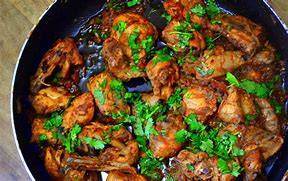

Special Chicken

Description
Here’s a step-by-step recipe for making delicious fried rice
Ingredients
- 4 boneless chicken breasts
- 2 tablespoons olive oil
- 1 teaspoon salt
- 1/2 teaspoon black pepper
- 1 teaspoon paprika
- 2 cloves garlic, minced
- 1/4 cup chopped parsley
Instructions
- Preheat Oven:!Preheat Oven Preheat your oven to 375°F (190°C).
- Season Chicken:!Season Chicken Rub the chicken breasts with olive oil,
salt, pepper, and paprika.
- Sear Chicken:!Sear Chicken Heat a skillet over medium-high heat.
Add the chicken and sear for 2-3 minutes on each side until golden brown.
- Bake Chicken:!Bake Chicken Transfer the seared chicken to a baking dish.
Add minced garlic on top. Bake in the preheated oven for 20-25 minutes until fully cooked.
- Garnish and Serve:!Garnish and Serve Sprinkle chopped parsley over the chicken before serving.
Enjoy your delicious chicken dish!